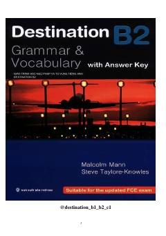

DBDestination B2 kitobi bo'yicha inglizcha-o'zbekcha so'zlar va iboralar to'plami.
Ushbu qo'llanma Malcolm Mann qalamiga mansub Destination B2 kitobining lug'at bo'limlari va ularning o'zbekcha tarjimasini o'z ichiga oladi. Unda turli mavzularga oid iboralar, iborali fe'llar va so mezonlarining izohlari berilgan. Kitob ingliz tilida so'z boyligini oshirishni xohlovchi o'quvchilar uchun mo'ljallangan.